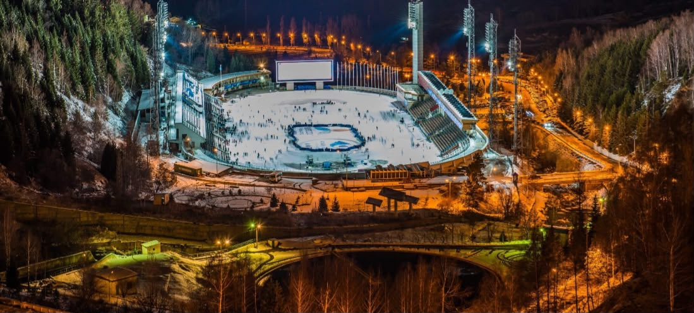
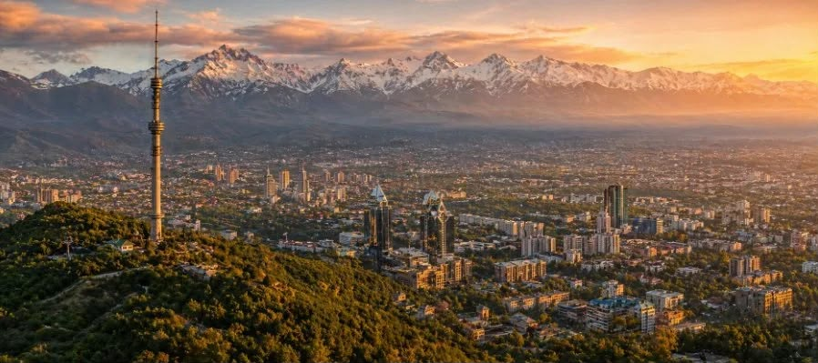
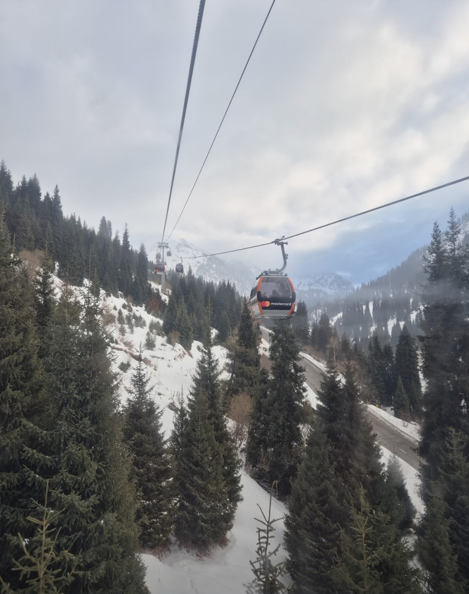
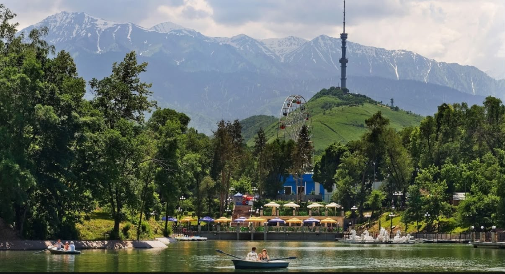
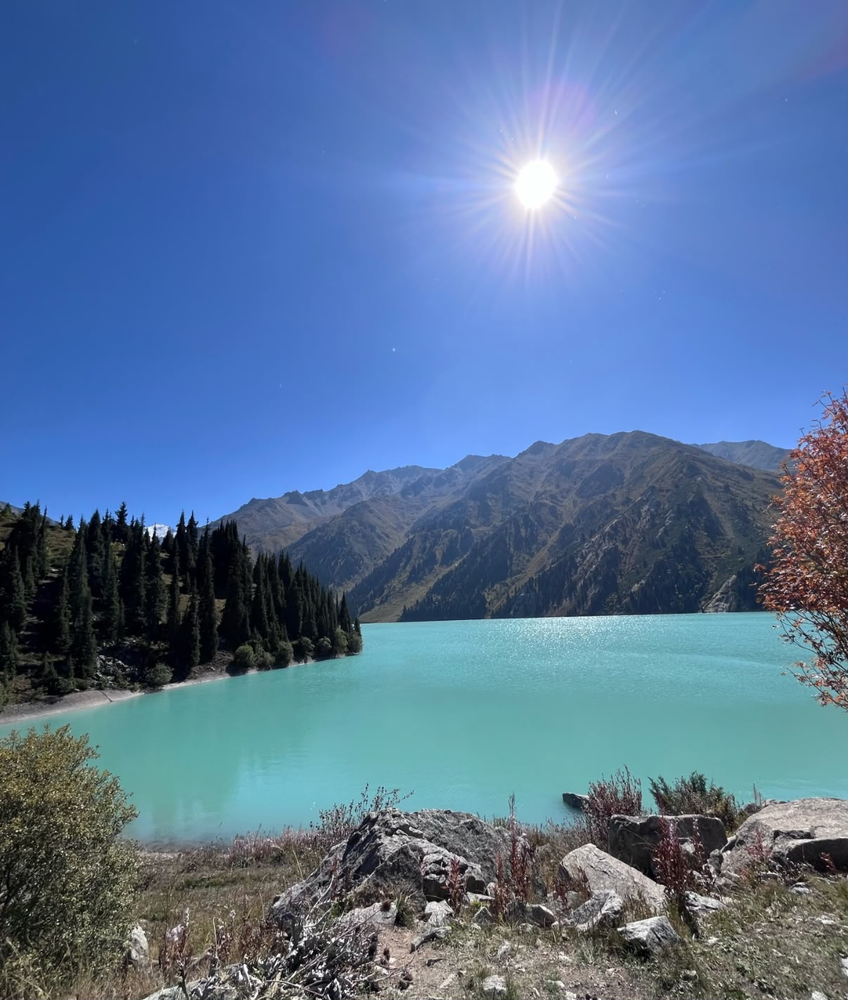

Medeu
Medeu is a famous mountain skating rink located near Almaty. It is surrounded by beautiful mountains and fresh air. Visitors can enjoy the scenery, take photos and spend time in nature.
DISCOVER KAZAKHSTAN
Explore the beautiful city of Almaty, surrounded by mountains, nature and unforgettable places.
WELCOME TO ALMATY
Almaty is one of the most popular destinations in Kazakhstan. The city combines modern life, beautiful nature, culture and amazing mountain views.
It is a great destination for people who enjoy sightseeing, outdoor activities, food and discovering new places.

PLACES TO VISIT

Medeu is a famous mountain skating rink located near Almaty. It is surrounded by beautiful mountains and fresh air. Visitors can enjoy the scenery, take photos and spend time in nature.

Shymbulak is a popular mountain resort near Almaty. Visitors can enjoy beautiful mountain views, fresh air and outdoor activities. It is a great place for hiking and relaxing.

Kok-Tobe is one of the most popular viewpoints in Almaty. From the top, visitors can enjoy a panoramic view of the city. It is also a nice place for walking and taking photos.

Big Almaty Lake is a beautiful mountain lake surrounded by the Trans-Ili Alatau mountains. It is known for its amazing natural scenery and peaceful atmosphere.
WHAT TO DO
Almaty is a good choice for travelers who want to combine city life with nature. You can visit cultural places during the day and enjoy the mountains later.